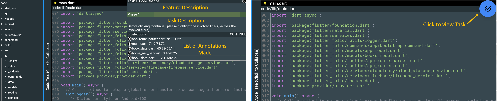
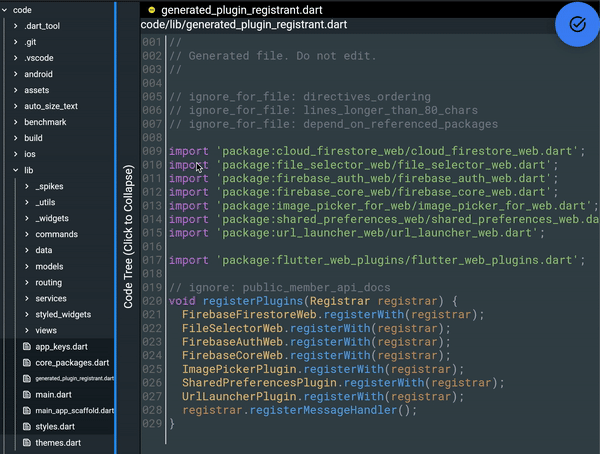
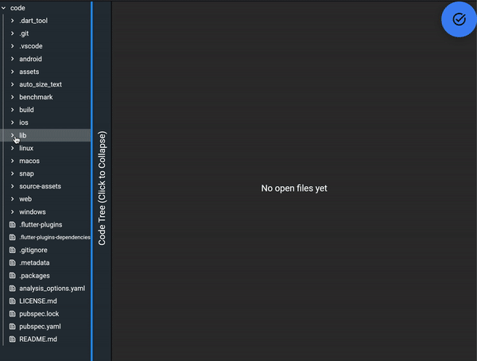

Code Documentation Tool Walkthrough
Overview:
Before we begin the experiment, we would like to familiarise you with the code documentation tool, which you will be interacting with to search through and annotate the source code of the Flutter Folio App. The main purpose of the tool is to enable developers to take notes (annotations) throughout their navigation of the code base, which they can return to at a future point.

By clicking on the button on the top right of the screen, you can view/hide the current task and the list of annotations you have made in the current task.You can also delete any annotations you do not want to submit for the corresponding task.
Features:
Annotate file
To make annotations to the file, simply select a code section.
Go to definition
To view the file where an identifier is defined, simply click on it and choose "Go to definition". The file containig the definition will be opnend in a new tab.

Find all references
To open all references of an identifier, click on the identifier and choose "Find all references".
A list of all references in the code base will be shown. Click on a reference to open it in a new tab.

Split screen
To split the screen, simply drag open tabs to the location you want to move them to. A screen distribution helper shows up at the center of the screen to assist you.
